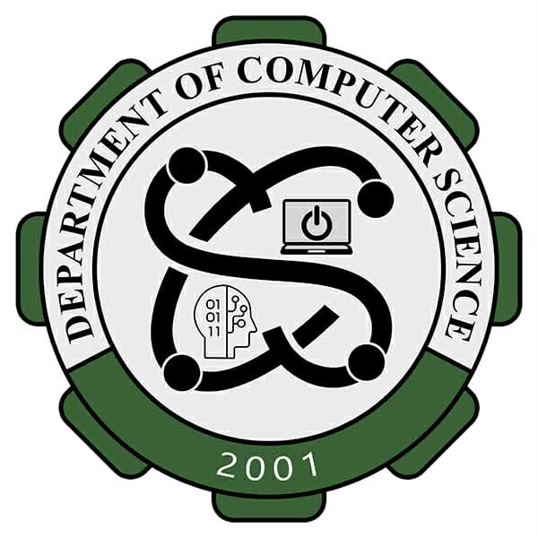

Mindanao State University
MCEST
College of Science and Technology · academic departments
DHESS
Health Education
Support Services
Support Services
Focus: community health promotion, health education strategies, support systems for clinical and public health environments.
Prepares professionals to design, implement, and evaluate health programs; bridges medical expertise and educational outreach.
DHM
Hospitality
Management
Management
Focus: hotel & restaurant operations, tourism leadership, event management, and global hospitality trends.
Develops managers for the dynamic service industry – from food service to resort administration.
DIT
Industrial
Technology
Technology
Focus: production systems, manufacturing processes, industrial maintenance, and quality control.
Equips technologists with hands‑on skills to improve efficiency and innovation in industrial settings.
DET
Engineering
Technology
Technology
Focus: applied engineering, electronics, CAD, instrumentation, and project implementation.
Blends theory with practical engineering techniques to prepare graduates for technical and supervisory roles.

DCS
Computer
Science
Science
Focus: algorithms, software development, artificial intelligence, data systems, and cybersecurity.
Forms future innovators who design and build the digital solutions that drive modern society.
DCJE
Criminal Justice
Education
Education
Focus: criminology, law enforcement administration, forensic science, and correctional systems.
Prepares ethical leaders for the justice system – from police work to legal research and rehabilitation.
DSW
Social
Work
Work
Focus: community empowerment, child and family welfare, mental health support, and social policy advocacy.
Trains compassionate professionals to promote social change, well‑being, and justice for vulnerable groups.
DNSM
Natural Science &
Mathematics
Mathematics
Focus: biological sciences, chemistry, physics, mathematics, and environmental research.
Lays the quantitative and scientific foundation for innovation, teaching, and advanced studies.